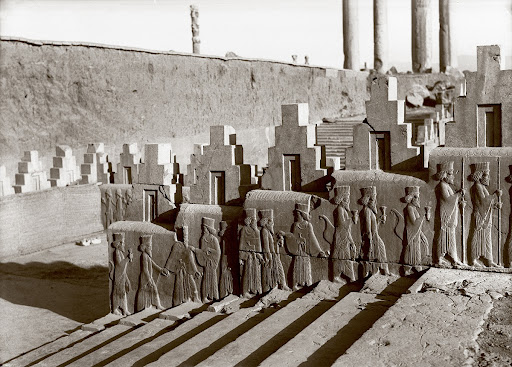
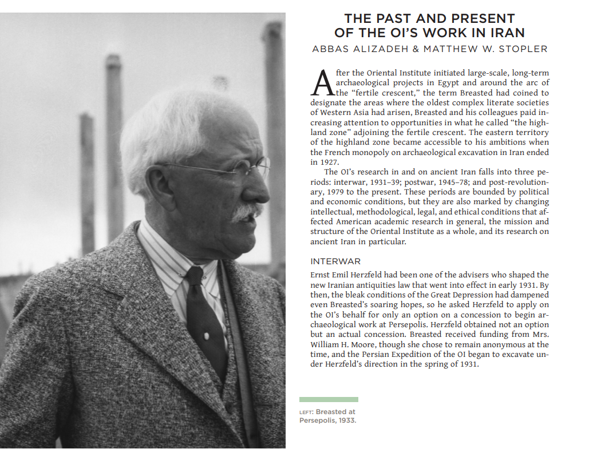

About Persepolis and Its History
Persepolis, meaning "the Persian city," was the ceremonial capital of the Achaemenid Empire. Construction began around 518 BC under Darius I and continued for over a century. It served as a vibrant center for ceremonies, festivals, and the reception of foreign dignitaries.
The site is renowned for its magnificent ruins, including grand staircases, monumental gates, and intricately carved reliefs depicting tribute bearers from various nations. Despite its destruction by Alexander the Great in 330 BC, the remnants continue to inspire awe and tell the story of one of the greatest empires in ancient history.
Featured Article: The Oriental Institute's Role in Iranian Archaeology
This comprehensive historical review article highlights the outstanding activities and achievements of the Oriental Institute of Chicago (OI) in the field of Iranian archaeology. The article is authored by Dr. Abbas Alizadeh, a distinguished Iranian archaeologist and prominent scholar at the University of Chicago.
This work was published in 2019 as part of the valuable publication series «Discovering New Pasts: The OI at 100». The article meticulously examines the history of key excavations, introduces influential figures, important sources, and the fundamental contribution of the OI to the advancement of archaeological knowledge in Iran over nearly a century.
Download Article (PDF) 📥